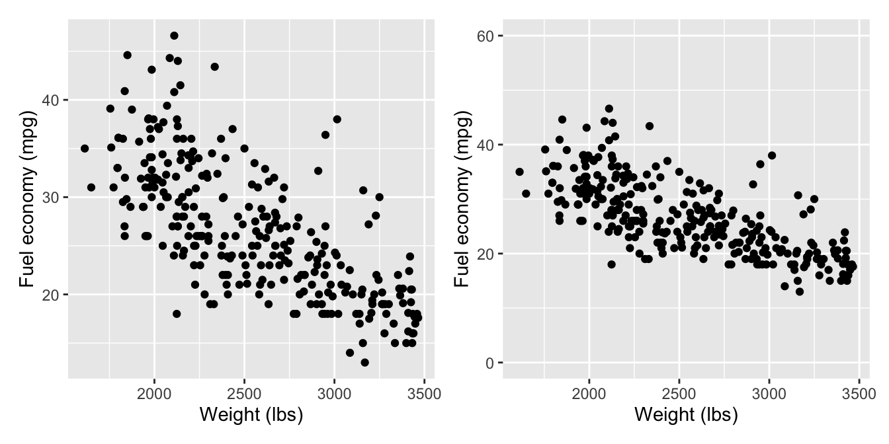
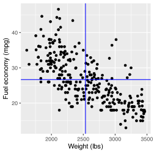
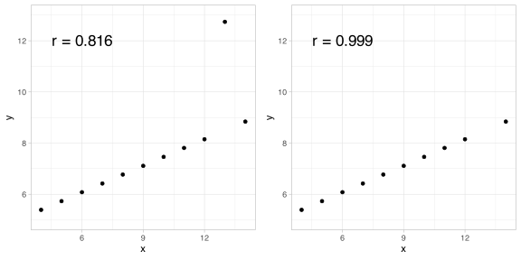

head(mpg)
## weight mpg
## 1 3436 18
## 2 3433 16
## 3 3449 17
## 4 3086 14
## 5 2372 24
## 6 2833 22
dim(mpg)
## [1] 289 2Correlation and Regression
Stat 250
Overview: Fuel Economy Data
Many factors go into determining what gas mileage a car will achieve
For now, we will focus on the weight of a car
It’s generally understood that heavier cars will get worse fuel economy, but it is not clear how much of an increase in weight will lead to a decrease in fuel economy
Overview: Fuel Economy Data
Notation:
\(y_i =\) MPG for ith car
\(x_i =\) weight for ith car
\(i = 1,\ldots, n\)
Exploratory Data Analysis
Scatterplots
Form?
Direction?
Strength?
Outlier/unusual features?
Strength of association
Perception of the strength of the association can change just by changing the scale on the vertical axis
Covariance
Correlation
Caution
Caution
Correlation is sensitive to outliers
Model selection
\(y_i = f(x_i) + \varepsilon_i\)
What is a good model for the fuel economy data?
Simple Linear Regression
Predicting fuel economy
Task: predict the fuel economy of a vehicle based on its weight—i.e. find \(\widehat{\alpha}\) and \(\widehat{\beta}\)
\[\widehat{y}_i = \widehat{\alpha} + \widehat{\beta}x_i\]
Approach: minimize the residual sums of squares
\[RSS = \sum_{i=1}^n \left(y_i - a - b x_i \right)^2\]
- This is called least squares (LS) estimation
Linear models in R
lm is our workhorse function
The formula is of the form
response ~ predictorThe result is an object of class
lm
Linear models in R
You have a few options to the results
Print: print
modto see the estimated regression coefficientsSummary:
summary(mod)displays the most useful information about the modelAttributes: extract the attribute of interest using the
$operator
summary()
Call:
lm(formula = mpg ~ weight, data = mpg)
Residuals:
Min 1Q Median 3Q Max
-12.7011 -3.3404 -0.5987 2.3588 16.0605
Coefficients:
Estimate Std. Error t value Pr(>|t|)
(Intercept) 51.5871689 1.4835394 34.77 <2e-16 ***
weight -0.0098334 0.0005749 -17.11 <2e-16 ***
---
Signif. codes: 0 '***' 0.001 '**' 0.01 '*' 0.05 '.' 0.1 ' ' 1
Residual standard error: 4.723 on 287 degrees of freedom
Multiple R-squared: 0.5048, Adjusted R-squared: 0.5031
F-statistic: 292.6 on 1 and 287 DF, p-value: < 2.2e-16Interpretations
\(\widehat{\boldsymbol{\beta}}\)
\(\widehat{\boldsymbol{\alpha}}\)
Making predictions
Once we have our estimated regression coefficients, \(\widehat{\alpha}\) and \(\widehat{\beta}\), obtaining a prediction is easy.
Example predict the MPG for a car weighing 2,500 lbs
\[\widehat{y}=\widehat{\alpha}+\widehat{\beta}(2500)\]
In R, we use the predict function
The full SLR model
LS only assumes that there is a linear relationship between \(x\) and \(y\)
Additional assumptions are needed to understand the uncertainty of our predictions
The SLR model can be written in a few forms
\(Y_i = \alpha + \beta x_i + \varepsilon_i\) where \(\varepsilon\overset{iid}{\sim} N(0, \sigma^2)\)
\(Y_i \overset{iid}{\sim} N(\alpha + \beta x_i, \sigma^2)\)

Regression conditions/assumptions
Linearity: \(E(Y_i|X = x_i) = \mu_i = \alpha + \beta x_i\)
Independence: \(\varepsilon_1, \ldots, \varepsilon_n\) are independent
Constant error variance: \(Var(\varepsilon_1) = \cdots = Var(\varepsilon_n) = \sigma^2\)
Normal error terms: \(\varepsilon_i \sim N(0, \sigma^2)\)
ML estimation
We cannot obtain an estimate of \(\sigma^2\) through LS, so instead we can use maximum likelihood (ML)
To do this, we simply maximize the likelihood function
\[L(\alpha, \beta, \sigma) = \prod_{i=1}^n f(Y_i | x_i, \alpha, \beta, \sigma) = \prod_{i=1}^n \dfrac{1}{\sigma \sqrt{2\pi}} e^{-(Y_i - \alpha - \beta x_i)/2\sigma^2}\]
Idea: finding the values of \(\alpha\), \(\beta\), and \(\sigma\) that make our data most likely
ML estimation
It’s easier to work with the log likelihood
\(\ell(\alpha, \beta, \sigma) = \sum_{i=1}^n \log(\sigma) - \dfrac{1}{2}\log(2\pi) - (Y_i - \alpha - \beta x_i)^2 / 2 \sigma^2\)
\(\dfrac{\partial \ell}{\partial \alpha} = \dfrac{1}{\sigma^2} \displaystyle \sum_{i=1}^n (Y_i - \alpha - \beta x_i)\)
\(\dfrac{\partial \ell}{\partial \beta} = \dfrac{1}{\sigma^2} \displaystyle \sum_{i=1}^n (Y_i - \alpha - \beta x_i)x_i\)
\(\dfrac{\partial \ell}{\partial \sigma} = \dfrac{-n}{\sigma} - \dfrac{1}{\sigma^3} \displaystyle \sum_{i=1}^n (y_i - \alpha - \beta x_i)^2 = \dfrac{1}{\sigma^3} \left( n\sigma^2 - \displaystyle \sum_{i=1}^n e^2_i \right)\)
where \(e_i = Y_i - (\alpha + \beta x_i) = Y_i - \widehat{Y}_i\)
ML estimation
Setting the derivatives to 0 and solving yields
\(\widehat{\alpha} = \bar{y} - \widehat{\beta} \bar{x}\)
\(\widehat{\beta} = \dfrac{\sum(x_i - \bar{x})(Y_i - \bar{Y})}{\sum(x_i - \bar{x})^2}\)
\(\widehat{\sigma}^2 = \dfrac{\sum e_i^2}{n}\), where \(e_i = y_i - (\widehat{\alpha} + \widehat{\beta}x_i)\)
\(\widehat{\sigma}^2\) is biased, so we must make an adjustment to obtain an unbiased estimator
\[S^2 = \dfrac{\sum e^2_i}{n - 2}\]
Properties of our estimators
\(\widehat{\alpha}\) and \(\widehat{\beta}\) are unbiased estimates of \(\alpha\) and \(\beta\)
\(\widehat{\alpha}\) and \(\widehat{\beta}\) are the best linear unbiased estimates (BLUE); that is, they have the smallest variance of all linear unbiased estimates
\(S^2\) is an unbiased estimate of \(\sigma^2\)